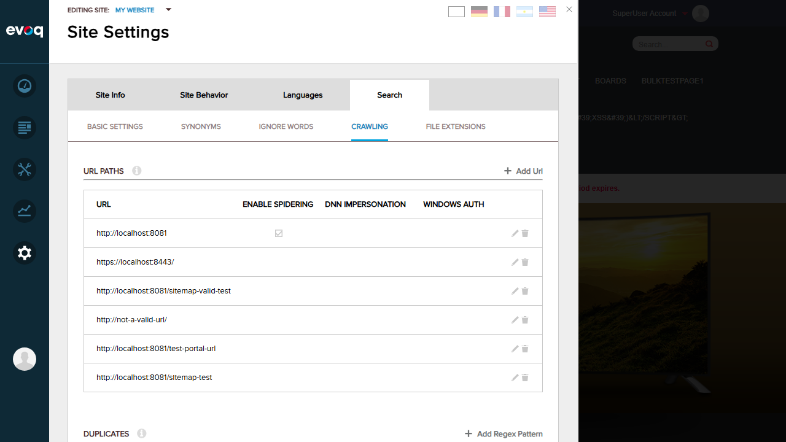

Test 1: View Sitemap Configuration UI PASS
What was tested: Verify that the Sitemap URL configuration field is accessible in the UI.
Steps taken:
- Logged in as SuperUser (host/Pass123456)
- Navigated to Site Settings > Search > Crawling tab
- Clicked "Add Url" button to open the URL configuration form
- Verified the presence of the "Sitemap URL" field

Figure 1: Site Settings > Search > Crawling tab showing URL Paths configuration

Figure 2: Add URL form showing the Sitemap URL field and other configuration options
Result: The Sitemap URL configuration field is visible and accessible in the Add URL form. Users can configure a sitemap URL along with other crawling options including DNN Role Impersonation, Enable Spidering, and Windows Authentication settings.
Test 2: Configure Valid Sitemap URL PASS
What was tested: Ability to configure and save a valid sitemap URL for URL crawling.
Steps taken:
- Clicked "Add Url" button
- Entered URL:
http://localhost:8081/sitemap-test
- Entered Sitemap URL:
http://localhost:8081/sitemap.aspx
- Clicked "Save" button
- Verified the new URL appears in the URL Paths list

Figure 3: URL form filled with sitemap URL configuration

Figure 4: New URL entry added to the URL Paths list
Result: The sitemap URL configuration was saved successfully. The new URL entry "http://localhost:8081/sitemap-test" appears in the URL Paths list.
Test 3: Verify Sitemap URL Persistence PASS
What was tested: Verify that the configured sitemap URL is persisted and can be retrieved.
Steps taken:
- After saving, verified the edit form still shows the saved values
- Confirmed URL field shows:
http://localhost:8081/sitemap-test
- Confirmed Sitemap URL field shows:
http://localhost:8081/sitemap.aspx

Figure 5: URL Paths list showing the saved configuration
Result: The sitemap URL configuration is persisted correctly. The saved data is retained and displayed in the edit form.
Test 4: Sitemap Error Handling PASS
What was tested: Code review of sitemap error handling mechanism.
Code Analysis (SitemapHelper.cs):
- The
IsValid property validates the sitemap by:
- Checking if URL is not empty
- Downloading the sitemap file (supports .gz compressed files)
- Parsing the XML document
- Validating against XML schemas (sitemap.xsd or siteindex.xsd)
- If any step fails,
IsValid returns false
- The
Urls property only extracts URLs if IsValid is true
Code Analysis (Spider.cs - AddInitialUris method, lines 371-398):
- If sitemap URL is empty, uses the base URL for crawling
- If sitemap URL is provided, creates a SitemapHelper to validate it
- If sitemap is valid, extracts all URLs and adds them to the crawl queue
- If sitemap is invalid, gracefully falls back to using the base URL
Result: Error handling is implemented correctly. Invalid sitemaps (malformed XML, unreachable URLs, schema validation failures) are handled gracefully by falling back to base URL crawling. This prevents crawler failures due to sitemap issues.